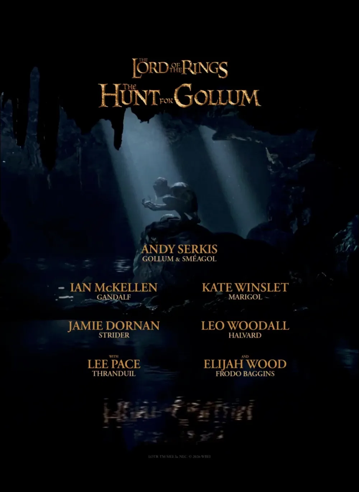
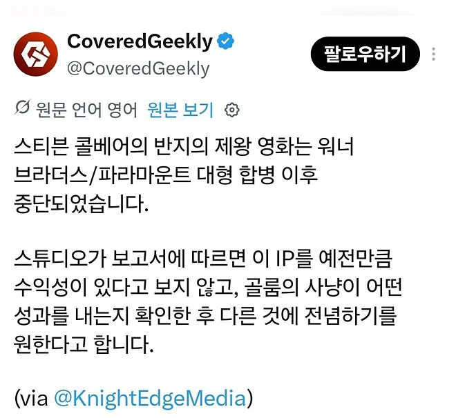

내년 개봉예정인 반지의 제왕 : 골룸 사냥의 후속편으로 예정되어 있던 영화였음
프로도가 발리노르로 떠난지 14년 후 시점을 다루려고 했다고 함

워너브라더스/파라마운트 합병의 결과로 중단됐고
아마존 프라임 힘의 반지 시리즈 실패 등으로 스튜디오가 반지의 제왕 IP를 예전만큼 수익성이 있다고 보지 않는다는듯
----------
그러게 누가 그렇게 병신같은 드라마 만들라고 협박하디

내년 개봉예정인 반지의 제왕 : 골룸 사냥의 후속편으로 예정되어 있던 영화였음
프로도가 발리노르로 떠난지 14년 후 시점을 다루려고 했다고 함

워너브라더스/파라마운트 합병의 결과로 중단됐고
아마존 프라임 힘의 반지 시리즈 실패 등으로 스튜디오가 반지의 제왕 IP를 예전만큼 수익성이 있다고 보지 않는다는듯
----------
그러게 누가 그렇게 병신같은 드라마 만들라고 협박하디
드라마를 병신같이 만들어놓고 IP 수익성이 구리다 라고 하면 씨벌럼들이
그저 남탓 ㅋㅋ
근데왜굳이드라마를고집하는거임?
트렌드가 스크린에서 스트리밍로 옮겨가서 그럼. 영화랑 드라마 둘다 기똥차게 뽑았다는 가정하에 드라마는 시즌제라는 확장성과 IP 변화 등 장기 수익성이 월등히 높음. 다만 좋은 IP를 가지고 결과물을 좃박았기 때문에 실패했을 뿐이지. 아마 만들면서 왕좌의 게임 처럼 쪽쪽 빨아먹어야지~ 하면서 신났을걸
차리리 최후의동맹쪽이나 영화로 해주지
ai로 팬메이드 만드는게 더 나음
그야 드라마가 병신이니까 실패한거 잖수...
그냥 원작대로 쳐 만드라고요 이상한게 변형하지 말고
???:스토리라인은 따라갈게요 근데 캐릭들 피부색은 좀 바꿔도되죠???
근데 IP 입장에서는 어쩔 수 없긴 함. 반지의 제왕이 소설대로 구현됐으면 백인 엘프와 백인 로한인들이 악한 똥양인 닮은 오크 짓밟고 미개한 동부인/남부인 계도시키는 내용임.
괜히 나치들이 좋아하는게 아님. 톨킨은 나치를 싫어했지만서도.
'엘프 혈통'이 마치 우월한 상위인종의 혈통처럼 묘사되는...
그리고 그런 상위혈통을 섞인 인간들이 선택받은 고대 왕족...!
정작 톨킨은 인종차별 극혐했음. 그냥 현재 PC충 새끼들이 지들 입맛에 안맞으니 대작을 멋대로 지들 도구로 이용해쳐먹는 거라 봐도 무방함
남아공에서 활동이랑 나치 싫어했다도르이긴한데.. 양놈들이 동양인 보면 눈 찢는거 보고 인종차별 아닌데?하는 수준임.그 때 기준으로 보면 선인이긴한데, 지금 보면 유럽중심의 사고방식에서 못 벗어난 사람임.
그리고 오디세이 성공한거보면 배우의 인종이나 트랜스젠더 여부는 그닥 중요하지 않은거같아. 걍 연출이나 각색이 구렸어..
누메노르의 최후를보면 딱히 백인이나 유럽우월주의로 차별하려 한것도 아니었음. 굳이 소설에서 유럽식 백인으로 외모가 규정된 애들은 로한인데 걔들이 기마병빼고는 딱히 다른 세력보다 우월한 점이 없는데? 군대체계에도 동아시아 유목민족들 특징이 섞였고
현실역사도 아니고 엘프가 현실종족도 아닌데 피부색 정하는건 작가 마음이지. 따로 있는 동부인들중에 보르 일족도 있는등 동부인과 남부 인간들은 오크마냥 단순히 악이나 야만인들로 규정된게 아님. 그 오크에 대해서조차 오크 딜레마등으로 작가가 고민을 해왔음
정작 엘프도 실마실로 뒤집어진 적 있고 톨킨도 가운데땅에 일어난 비극들을 가지고 엘프들을 깠잖아. 따지고 보면 엘프중에서도 가장 큰 일파인 텔레리의 피부색은 딱히 정해진게 없음
유럽중심 사고라 해도 나니아 연대기처럼 인종차별이 노골적이지도 않은 옛날 판타지인데 그냥 피부하얀 집단이 좋아보인다는 거 때문에 PC충들 입맛대로 뜯어고칠 필요는 없지. 동아시아풍 판타지작품에서 왜 아시아인들 위주로 진행되냐고 문제삼는 것과 비슷한 거지
톨키니스트들은 PC충들이 나대지 않아도 이미 인종차별주의자들에게 톨킨 작품들이 이용당하지 않게 맞서왔음. 작가 본인도 작품에 대한 정치적, 사회적 해석을 거부했는데 PC충들이 논란거리 만들어온 거임
PC충들이 그 대작을 어떻게 대하느나도 드라마의 질과 재미에 영향을 미치지. 남의 작품을 지들 생각 가르침 내리는 도구로 이용해처먹기나 할 생각으로 손대면 당연히 그게 최우선시되고 다른 것들에 상대적으로 소홀해지지
톨킨은 애초에 유럽을 제외한 나머지 지역들은 찌바리라는 선입견으로 써왔고, 오크 딜레마나 파란 마법사 둘 배경을 바꾼 것도 신학적인 이유였지 톨킨이 다른 인종을 신경쓰거나 해서가 전혀 아니였음. 톨킨 작품에서 서쪽은 신들의 손길이 닿아있는 신성한 곳이고, 동쪽은 그 힘이 닿지 않아 인간이 타락하고 사우론에게 점령당하는 하찮은 지역임. 모든 이야기는 백인 엘프, 백인의 주도로 흘러가고, 동부, 남부인들은 누메노르인의 계도를 받아야하는 짐짝 취급임. 그 잘난 기마 민족 컨셉도 사실 누가 진짜 기마민족으로서 유럽을 짓밟았는지 생각해보면 그저 체리피킹에 불과함. 피터잭슨이 그나마 오크를 인간이랑 거리가 멀게 바꿔줘서 다행이지, 톨킨이 생각한대로 '혐오스럽게 생긴 동양인'으로 묘사했으면 영화 보는 사람들은 다 똑같은 생각 했을껄.
이게 ㄹㅇ 신화라면 단지 자기들과 비슷하지 않다는 이유로 이방인 취급하고 악으로 취급하는게 이해가 감. 하다못해 반지의 제왕이 누메노르인들의 기록이라는 컨셉만 유지했어도 '아 걔네가 만난 외부인들은 적 밖에 없었구나' 할 수 있음. 근데 실마릴리온을 쓰면서 인간의 역사 컨셉을 잡은게 문제임. 모든 인종을 등장시켜야하는데, 하필이면 피부 하얀 서부인들은 세상의 역사를 이끄는 주인공이고, 나머지 인종들은 거기에 휩쓸려 다니는 겉절이 같은 존재인거임. 공룡의 존재를 모르고 지구의 역사를 써내려가려고 했던 성경처럼, 톨킨이 본 동양인은 딱 거기까지인거.
그리고 동쪽에 남은 엘프들의 외향이 설정돼지 않았기 때문에 힘의 반지에서 그런 시도를 할 수 있었던거지. 오디세이 예시를 들었지만, 히메쉬 파텔이 그리스인 컨셉 잡는거 전혀 문제 안됐음. 헬레나가 흑인인거? 각색을 통해서 충분히 극복했음. 아테나가 피부가 어두운거? 신전을 모시던 여자애가 투영된 것이라는걸로 다 메꿨음. 톨킨 작품보다 훨씬 오래돼고 편협한 설정으로 짜여진 신화가 배우의 인종이나 성 정체성과 관련없이 훌륭하게 각색됐는데, 지구의 역사를 컨셉으로 잡은 드라마가 백인으로만 가득차야되는 이유는 톨킨이 피부 하얀거에 집착했다는거 말고는 없음.
그냥 힘의 반지는 각색과 연출이 쓰레기였어.
흑인프로도
지들이 똥 싸놓고 IP 탓을 하네 시발 ㅋㅋㅋㅋ
드라마화는 이제 거의 믿거가 되는듯
고증 개무시하니까 그렇게되잖어
IP가 실패 X
좆대로 만들다 실패 O
드라마는 원작 훼손 수준으로 개처박아놓고 ㅋㅋㅋ
반지의제왕으로 망하는것도 능력이다 ㅋㅋ
드워프쪽은 디자인 꽤 괜찮았는디.. pc 흑인도 어울리고 ㅋㅋ 차라리 드워프를 메인으로 새로 만들지
11월 힘의반지 시즌3 많관부
와 톨키니스트들 개긁힐만한 발언이네ㅋㅋㅋ
힘의 반지는 진짜 개ㅂㅅ같이 만들어놓고는 벅벅벅 우기면서 '비판하는 사람들은 무지몽매한 놈들' ㅇㅈㄹ 하더니
ip가 힘이 없는 게 아니라 뭐 치트키도 아니고 좆같이 만들면 당연히 안팔리지 ㅋㅋㅋ
제대로 만들기만 하면 그거만한 파워 나오는 게 얼마나 있다고
김도 골룸이나 보러가야지 내 웃음벨
움짤보면 서프라이즈로 만들어 놨더만 ㅋㅋ
호빗 개재밌게 봤는데
이후로 저만한 판타지 모험 같은게 안나와..
흑인 엘프에서 절망했다
꼭 지들이 병신같이 만들어두고 IP에 사업성이 없는줄 알더라
저 회사 경영진들 싹다 잘라라. 이만한 개쩌는 IP와 아이템이 어딨냐? 개병신드라마 쳐 만들어놓고 자존심 ㅈㄴ세우네 병신들
ip가 문제가 아니라 드라마가 문제였잖여
소설 그대로만 해도 떡을 치는걸 참
레젠다리움의 다른 하이라이트로 넘어가서
후린의 아이들이나 베렌과 루시엔 각잡고 찍어야 하는데
반지의 제왕 주변만 멤돌면서 원작에 없는거 좆대로 만드니 망하지
씨벌롬들이 지들이 좆같이 만들어놓고 ip타령을 하네
골룸은 내년에나오고 그후속편도있었구나
드라마는 필요없다고